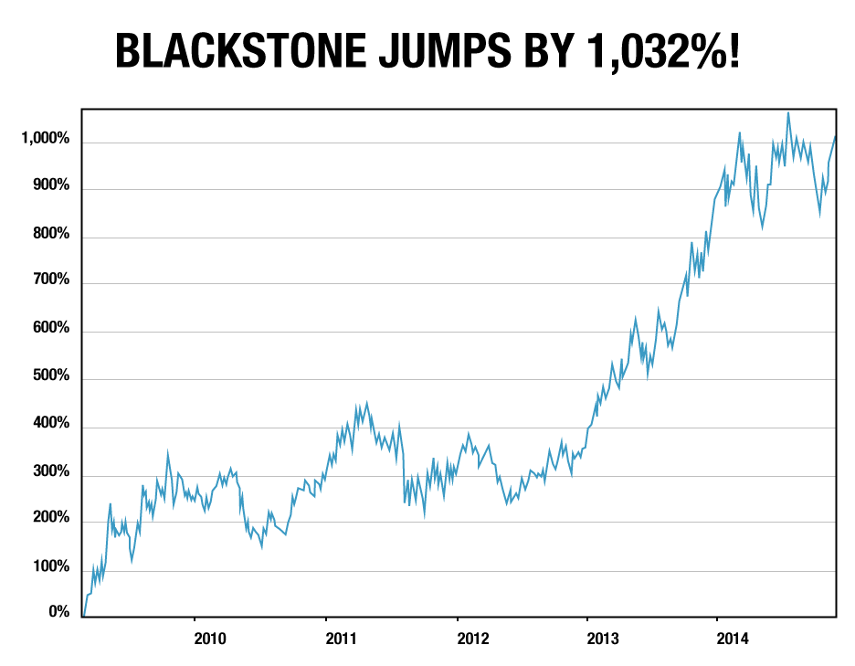
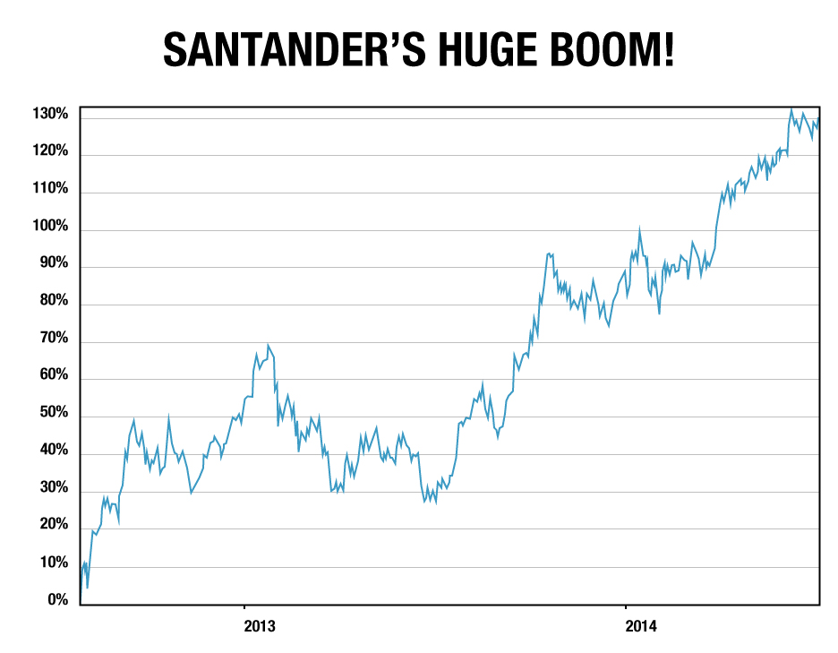

Dear Reader,
Jim Rickards, CIA Economist
Until December 28th, you can claim our TWO brand-new high-priced trading research services (a $5,000 annual value) for free, for life.
Here’s what’s happening…
By now, you’ve probably heard that bestselling author and financial expert Jim Rickards has joined our team.
Jim has spent the last 40 years advising the Department of Defense, the U.S. intelligence community and major hedge funds on global finance.
He’s been called “the smartest man in the financial world.”
He’s testified before the U.S. House of Representatives about the risks of our global financial system.
And possible 2016 presidential candidate Rand Paul even recently cited Jim’s work as a warning to all government officials.
Very soon Jim will launch not one, but TWO brand-new trading services that will show regular investors like you how to make money in the markets.
The first of his two new services harnesses the power of the CIA’s system for solving the world’s most complex problems… in an effort to predict the precise points to strike in the stock market for potential fortunes.
“The smartest man in the financial world.”
The second of the services shows you leveraged ways to ride the seesawing currency movements for quick gains in the stock market.
As far as I know, there are no services like these in the entire publishing industry. That’s because no one but Agora Financial has full access to Jim.
And that’s why we intend to price each of these services at precisely $2,500 per year when they’re launched (a total of $5,000 per year for both services).
However, with your permission, I'd like to give them to you for free.
All you need to do is read my message below in full, and respond by December 28th.
After that I’ll set your account up with forever access to Jim’s research.
That's right. You won’t need to pay a nickel to get access to this
$5,000 a year package.
Free this month. Free for the first full year. In fact, free for life.
As in, a lifetime free subscription to Jim’s work.
I will explain why in a moment…
First, let me tell you a little more about those two brand-new services…
A STRATEGY STRAIGHT FROM THE PENTAGON’S APPLIED PHYSICS LABORATORY

As I mentioned, Jim Rickards has been the “go-to” guy for the Department of Defense.
And as a best-selling author of two currency books — Currency Wars and The Death of Money — he’s become somewhat of a celebrity in the financial community.
That’s why, on a rainy morning in the late winter of 2009, he joined 60 members of the intelligence community, Treasury department, Federal Reserve and Wall Street at a top-secret location.
They met behind closed doors of the Pentagon’s Applied Physics Laboratory, a secret facility just outside of Washington, D.C.
They were there to prepare our nation for a new war.
But this wouldn’t be your typical war fought with air forces, missiles, submarines and tanks.
Instead, the Pentagon was preparing for a global financial war… one in which countries would use currencies and capital markets as weapons.
Fast forward to the present day and you know the Federal Reserve, the European Central Bank, the Bank of Japan and other central banks across the globe are all trying to devalue their currencies.
Since currencies are intertwined with virtually every aspect of the global economy, those moves end up creating ripple effects on the stock market… leading to some very profitable trades.
Play these currency moves correctly, and they could make you rich.
For example, a recent study from MIT estimates that some Wall Street bankers have made as much as $653 million thanks to these currency wars.
"Play these currency moves correctly, and they could make you rich."
The New York Times reported that in-the-know traders have pocketed seven-figure checks. And a Japanese man made $182 million after a currency battle broke out in Japan.
There’s a lot of money at stake.
But don’t just take my word for it…
See for yourself what happens when these currency battles break out.
One of these battles took place on March 18, 2009, when the U.S. Federal Reserve first announced a policy to devalue the U.S. dollar.
And it sent a specific group of stocks through the roof.
INTRODUCING A CIA-BACKED SYSTEM THAT COULD PREDICT STOCK MARKET MOVES

Very soon Jim will launch not one, but TWO brand-new trading services that will show regular investors like you how to make money in the markets.
The first of his two new services harnesses the power of the CIA’s system for solving the world’s most complex problems… in an effort to predict the precise points to strike in the stock market for potential fortunes.
The second of the services shows you leveraged ways to ride the seesawing currency movements for quick gains in the stock market.
As far as I know, there are no services like these in the entire publishing industry. That’s because no one but Agora Financial has full access to Jim.
And that’s why we intend to price each of these services at precisely $2,500 per year when they’re launched (a total of $5,000 per year for both services).
However, with your permission, I'd like to give them to you for free.
That's right. You won’t need to pay a nickel to get access to this
$5,000 a year package.
All you need to do is read my message below in full, and respond by December 28th.
After that I’ll set your account up with forever access to Jim’s research.
That's right. You won’t need to pay a nickel to get access to this
$5,000 a year package.
Free this month. Free for the first full year. In fact, free for life.
As in, a lifetime free subscription to Jim’s work.
I will explain why in a moment…
THE BEST WAY TO PREPARE FOR THE NEXT FINANCIAL CRISIS
In his two bestselling books, Currency Wars and The Death of Money, Jim Rickards wrote about the instability of our global financial system and the risk of a dollar collapse.
Despite the short-term trading opportunities, Rickards says it’s just a matter of time before we go through another financial crisis like the one we saw in 2008.
And we know you can’t afford to suffer another major crash.
For that reason, earlier this year we launched Rickards’ Strategic Intelligence.
In this monthly research service, Rickards will tell you what’s really going on in the global economy and help you prepare for the next crisis.
"Help you grow your wealth even during the meltdown."
He will warn you about the risk factors that could trigger the next crash. And give you specific investment recommendations and wealth-protection strategies that will help you grow your wealth even during the meltdown.
As a member of the Agora Financial Reserve, you’ll also gain access to exclusive monthly webinars, where you’ll get to hear directly from Rickards. Although Rickards can’t give personalized financial advice, he will also be answering questions from his readers during this event.